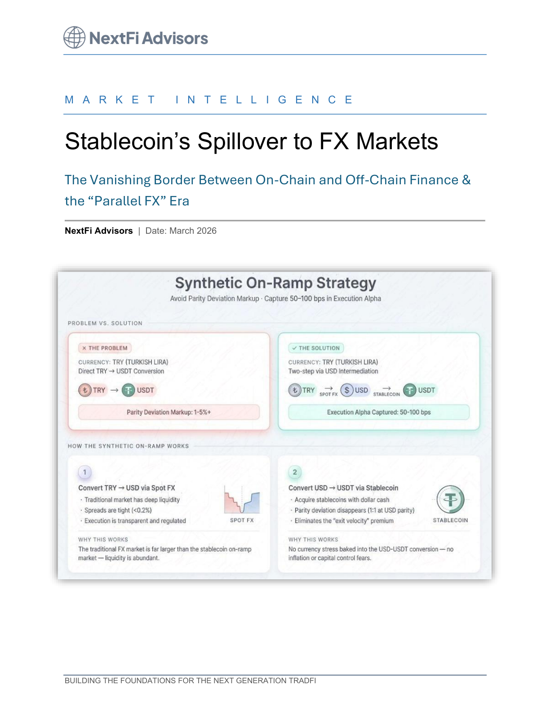

Market Structure
Stablecoin Spillover to FX Markets

Executive summary
- Stablecoin demand now acts as a transmission channel into mainstream funding and FX conditions.
- Balance-sheet constraints at key intermediaries can propagate liquidity stress across linked markets.
- Periods of elevated digital dollar demand may tighten traditional dollar funding and increase basis volatility.
- Risk teams should monitor on-chain and off-chain indicators together, not as separate domains.
- Institutions need scenario frameworks that include stablecoin-driven shocks in treasury and hedging plans.
From parallel market to connected system
Stablecoins were once treated as a niche settlement rail. Today, they form part of a wider liquidity complex where activity can influence balance-sheet availability and transmission in traditional financial channels.
The mechanism behind spillover pressure
When digital dollar demand surges, key intermediaries can absorb increased reserve and collateral flow. This can crowd balance-sheet capacity and indirectly raise the cost of funding in adjacent markets.
What institutions should do next
Leadership teams should add stablecoin-linked indicators into liquidity dashboards, stress scenarios, and hedging governance. The key is not prediction of every move, but readiness for correlated pressure across market layers.